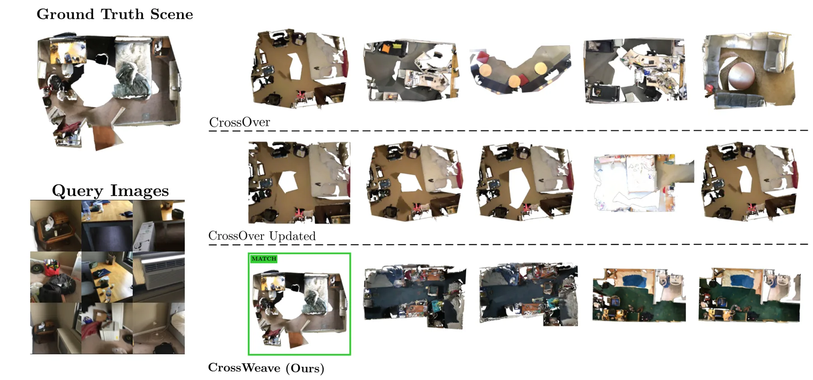
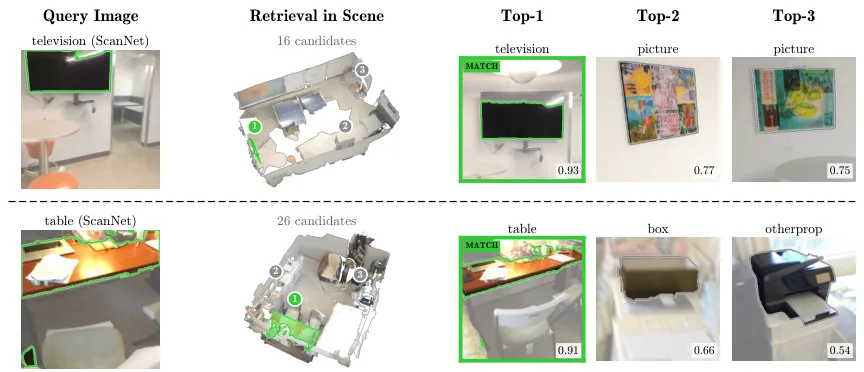
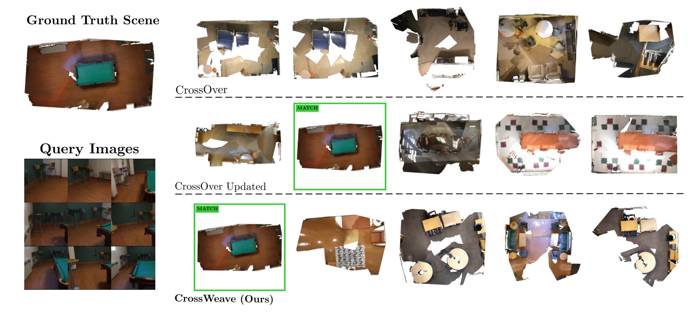
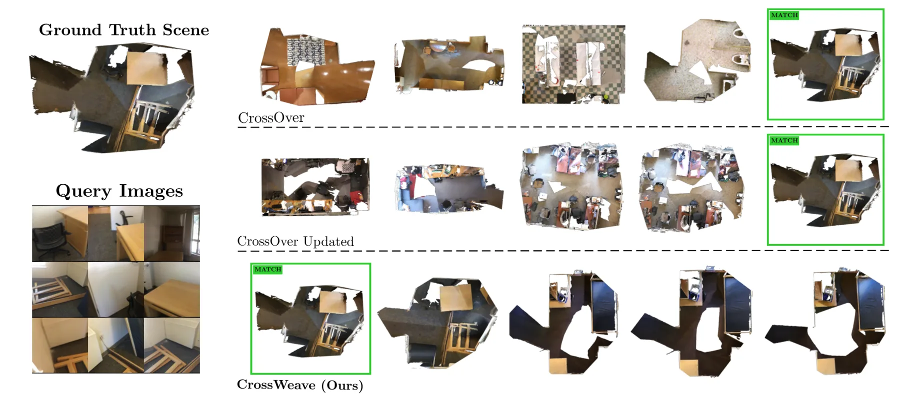
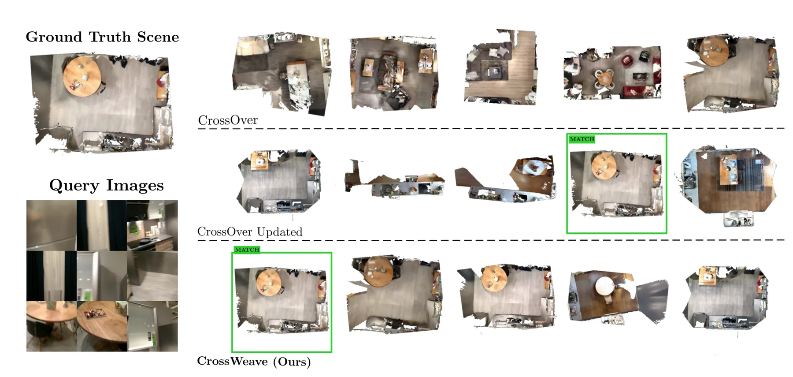

CrossWeave：用稀疏 2D-3D 对齐同时做场景与实例跨模态检索
CrossWeave: Cross-Modal Scene and Instance Retrieval from Sparse 2D-3D Alignment
只监督稀疏 patch–point 对应，一个模型同时做场景检索与实例检索；再用最优传输聚合把冗余区域压成簇。ScanNet 场景 Top-1 61.54（CrossOver(Updated) 40.38）、3RScan 46.50（23.57）；实例 Top-1 78.77（70.94），R@75% 67.95（49.68）。单视图 3RScan N=10 时 Top-1 53.60 与用真值场景图的 SceneGraphLoc 打平、Top-10 100.00。代码与项目页公开。
scene Top-1 on ScanNet
scene Top-1 on 3RScan
instance R@75%
scene Top-10 recall
作者、单位与技术谱系 · Research context
作者与单位
研究脉络
- CrossOver（跨模态场景/实例检索）方法基座关系：CrossOver 用独立的场景级与实例级对比目标、且每个任务一个模型；本文正是针对“整场景/整物体级监督不够细”这一点，改成稀疏 patch–point 监督并用单模型覆盖两任务。[论文 §1、Table 1–2]
- SceneGraphLoc（多模态场景图定位）对照上游关系：SceneGraphLoc 用多模态场景图把图像 patch 匹配到物体节点，推理时需要真值场景图；本文在单视图场景检索上与其对比，强调自己不需要场景图标注。[论文 §1、§5.3]
- Utonia（统一点云编码器，2026）技术基座关系：本文的 3D 编码器为 Utonia；为了排除“换了更强主干”的解释，作者把 CrossOver 也换成同一 Utonia 主干重训（CrossOver(Updated)）。[论文 §4.3 与参考文献 [41]]
作者与单位逐条来自首页署名。脉络三条对应基座（CrossOver）、对照（SceneGraphLoc）与技术基座（Utonia）。合作边仅记录共同署名与官方仓库，未推断导师关系；代码公开可直接核验。
方法本质拆解 · What actually changed
是不是微调？
是训练（不是微调预训练大模型）：图像编码器与 Utonia 3D 编码器在 ScanNet/3RScan 上按 patch–point 对应目标训练，没有加载额外的跨模态预训练权重，也没有场景级/实例级对比损失。
有没有额外约束？
约束全部落在对应层：稀疏 patch–point 对齐要求同一物理点的 2D patch 与 3D 点特征相近；OT 聚合项额外约束特征分配的“质量守恒”，把冗余区域压成簇。两者相加就是全部训练目标，没有全局对比项。
推理/后端到底做了什么？
推理只做特征比对：查询图像（场景用 10 视图、实例用带掩码的多视图）编码后与数据库中的 3D 子图/实例点云特征算相似度并排序；没有几何验证、没有 RANSAC 位姿求解，所以输出是候选排名而不是位姿。
方法本质是什么？
本质是把“检索”从全局描述子匹配改成局部对应的一致性打分：局部对应监督让描述子在结构相似场景里仍有区分度，OT 聚合则负责去冗余、把容量留给独特结构。效果是单模型双任务 SOTA；代价是推理仍是开环排序，且对查询视图数量敏感。
输入查询 RGB（场景 10 视图 / 实例带掩码）与 3D 点云库，用稀疏 patch–point 监督训练双编码器 + OT 聚合；直接效果是 ScanNet 场景 Top-1 61.54、实例 R@75% 67.95，单模型同时覆盖两类检索。

桥接价值Bridge
桥接价值
跨模态检索是“图 → 地图”的第一跳，我们做回环/重定位时同样需要一个在相似结构间仍有区分度的描述子。这篇的结论很直接：把监督放在稀疏局部对应上，比在整场景层面做对比学习更有效——因为它迫使描述子保留“哪个点对哪个点”的信息，而这正是相似走廊、重复家具场景里最容易丢的东西。对我们可以形成一条具体假设：局部对应监督得到的描述子，做重定位时的内点率应该更高。
方法与模块Method
方法摘要
从每个场景采样稀疏的 patch–point 对（图像 patch 与其对应 3D 点），用图像编码器与 3D 编码器（Utonia）分别提特征，再做 patch-point 对齐；对齐后的特征经最优传输聚合，把结构冗余区域聚成簇、腾出描述子容量给语义独特区域；训练用双目标对比（对齐项 + 聚合项），不加场景级/实例级对比。推理时场景检索把 10 张查询视图的特征与 3D 子图特征比对，实例检索则在场景内按实例点云排序。
可迁移模块
三个模块可搬：一是稀疏 patch–point 监督的构造方式（不需要整场景标注，只要对应点），适合我们用 LiDAR-相机数据自动生成；二是 OT 聚合抑制冗余区域，等价于给描述子做“结构去重”，可用于我们建图的描述子压缩；三是 R@75% 这类“覆盖率”指标，比 Top-1 更能反映检索是否够全，适合评估回环候选集质量。

证据Evidence
关键证据与数字
Table 1（场景检索）：ScanNet Top-1/5/10 = 61.54/99.36/100.00，CrossOver 22.44/61.86/75.32，CrossOver(Updated，同 Utonia 主干) 40.38/90.06/96.47；3RScan 46.50/85.99/92.36，CrossOver(Updated) 23.57/66.88/84.71。Table 2（实例检索）：ScanNet Top-1 78.77 vs 70.94（+7.83），R@75% 67.95 vs 49.68（+18.27）；3RScan Top-1 73.50 vs 66.80，R@75% 49.68 vs 35.03（+14.65）。Table 3（单视图，3RScan，N=10）：Top-1 53.60 与 SceneGraphLoc 持平，Top-5 93.10 vs 81.90，Top-10 100.00 vs 92.80；N=50 时 Top-1 27.50 vs 30.20（落后 2.7），但 Top-5 领先 10.0、Top-10 领先 15.3。
边界与下一步Limits & Next Step
边界与风险
作者承认的限制主要靠表格自陈：CrossOver(Updated) 已换成同一 3D 主干，所以增益不能归因于编码器；但反过来也要注意，R@25% 上 CrossWeave 98.40 略低于 CrossOver(Updated) 的 99.36，说明它在“容易的那部分实例”上没有优势，增益集中在严格阈值（R@75%）。我们的额外判断：一是只在 ScanNet/3RScan 两个室内数据集，无室外、无跨季节/跨光照；二是任务是检索而非位姿估计，检索对了不等于能定位；三是场景检索用 10 张查询视图，单视图（更接近机器人实时）性能明显下降（N=50 时 Top-1 27.50）；四是训练依赖 Utonia 主干与对应点生成流程，换主干后增益是否保持待核验。
下一步实验
第一，把 patch–point 监督用到我们的回环描述子上：同一批数据上比较“全局描述子对比学习”与“局部对应 + OT 聚合”，指标用 Top-1 与内点率，而不是只看召回。第二，把 R@75% 式覆盖率指标加入我们的候选检索评估，避免“Top-1 高但候选集不全”掩盖问题。第三，测试单视图/少视图设置（1–3 张）下的退化曲线，判断它能否用于实时重定位；若退化明显，再考虑用多帧融合弥补。







